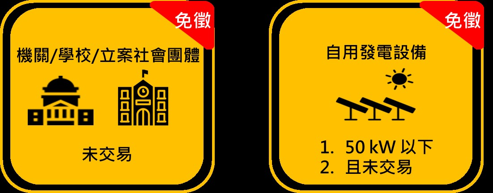

文: 吳玟璋/國家再生能源憑證中心
2020年為再生能源憑證起飛的一年，不僅全球前500大企業對於綠電的需求日益提升，臺灣本土企業的綠電需求亦大幅增加，隨著憑證中心業務量日益繁重並落實使用者付費原則，在2020年07月國家再生能源憑證中心依照「商品檢驗規費收費辦法」第19條之5正式計收再生能源憑證規費，詳如圖一。
| 收費對象 | 繳費 | 說明 | 範例 |
| 憑證申請人(賣方) | 評鑑費(案場查核) |
同現行商品檢驗辦法評鑑費 每人天8,000元／半人天4,000元 ※案場申請時查核，並每年執行複查 ※查核皆不超過一天 |
|
| 審查費(憑證核發) |
每張憑證新台幣3元 (每度綠電0.003元) ※包含服務管理費 ※憑證每月核發，未達1000度累計至下月 |
1千萬度綠電 (1萬張憑證)等於 3萬元審查費 |
|
| 憑證持有人(買方) | 服務費 (憑證管理服務) |
每張憑證新台幣0.5元 (每度綠電0.0005元) |
1千萬度綠電 (1萬張憑證)等於 5千元服務費 |
圖一 再生能源憑證規費
憑證中心所有規費皆為電子繳費單，中心會根據每位會員註冊時的電子郵件帳號寄送繳費單，業者若持有超過一張以上繳費單，可合併繳費金額進行一次性轉帳，以減輕轉帳手續費之負擔，收費模式有兩種:
會員繳費後，經濟部標準檢驗局將開立收據，憑證中心會統一於繳費後次月寄送至指定地址，以利業者執行核銷作業。
為簡化企業每月作業程序，目前案場會員與憑證需求者皆可申請預繳，來信至trec@bsmi.gov.tw告知公司名稱、統一編號、案場名稱、裝置容量、聯絡方式，並等待憑證中心回信後方可執行預繳。
目前憑證中心針對未販售憑證之政府機關、學校單位或社會團體不收審查費與評鑑費與裝置容量低於50kW且未販售憑證之自發自用設備亦不收取審查費與評鑑費。倘若，有相關免徵單位販賣憑證，憑證中心將追繳相關規費，以示公平。
圖二 免徵示意圖
未來憑證中心會持續開發多樣性繳費機制，以供業者有更多元繳費管道，達成E化政府便利快速的目標。
關於再生能源憑證規費收費作業的詳情，請參考再生能源憑證規費收費作業問答集。